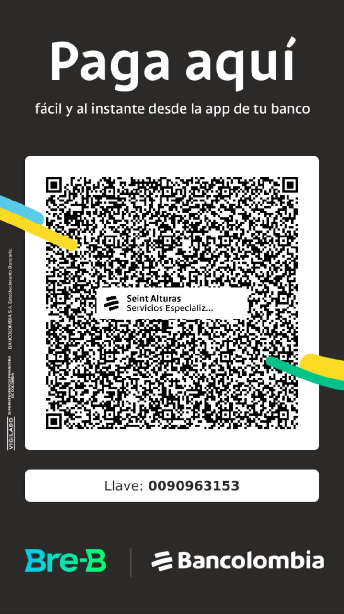

{{ post.cat }} · {{ post.fecha }}
{{ post.titulo }}
{{ par }}
¿Necesitas este servicio para tu empresa?
Cotiza en 4 h
Formación en tareas de alto riesgo y medicina ocupacional con laboratorio clínico propio, en un solo proveedor avalado.
No dictamos un curso: somos el centro de capacitación completo, aprobado por el Ministerio del Trabajo.
Exámenes de ingreso, periódicos y de egreso, con el profesiograma definido por cargo y riesgo.
Aplica a los exámenes de laboratorio del perfil ocupacional básico, contadas desde la toma de la muestra, de lunes a sábado, con muestras tomadas entre 6:00 a.m. y 10:00 a.m. en sede Bogotá.
Formación avalada en tareas de alto riesgo y exámenes ocupacionales con laboratorio clínico propio. Dos servicios, un proveedor, una sola cotización.
Dieciséis líneas de formación en tareas de alto riesgo y SST. Alturas y espacios confinados tienen su página con todos los roles explicados; las demás se cotizan directo.
Cuando una empresa necesita vincular personal con urgencia, el tiempo de respuesta pesa tanto como el precio. Por eso te decimos cuánto tardan los resultados y qué condiciones aplican.
Aplica a los exámenes de laboratorio del perfil ocupacional básico, contadas desde la toma de la muestra, de lunes a sábado, con muestras tomadas entre 6:00 a.m. y 10:00 a.m. en sede Bogotá.
Diseño e implementación del SG-SST, Copasst, CCL y sistemas de vigilancia epidemiológica.
Equipos de protección contra caídas y dotación por sector, con inspección de equipos.
Revisamos la matriz de riesgo por cargo y te decimos qué falta y qué sobra.
Los niveles de formación que exige la Resolución 4272 de 2021 del Ministerio del Trabajo, con su nombre oficial, duración, requisitos de ingreso y contenido temático. Todo se lee aquí: no entregamos los cursos en PDF.
El aval es de SEINT como centro aprobado y cubre todos los roles de esta página.
Para quien toma decisiones y gestiona los recursos administrativos que garantizan la seguridad en las tareas de alturas, supervisa que los trabajos de su área se planeen, autoricen y ejecuten conforme al programa de prevención contra caídas, y se coordina con el administrador del SG-SST en las medidas de control.
Para quien ejecuta tareas a más de dos metros de altura. Es el nivel base para trabajar.
Para quien autoriza los permisos, inspecciona equipos y responde por el programa en obra.
Obligatorio cada 18 meses para mantener vigente la certificación del trabajador.
Para quien va a formar y evaluar a otros trabajadores en alturas.
No publicamos calendario. Consulta los grupos abiertos de esta semana por formulario o WhatsApp y te confirmamos cupos en el mismo día.
También certificamos a personas por su cuenta, sin empresa que las respalde. El formulario es distinto: no te pedimos NIT ni número de trabajadores.
Espacios confinados se rige por la Resolución 0491 de 2020, no por la 4272. Los roles, sus horas y sus contenidos son distintos a los de alturas y aquí van separados a propósito.
El aval es de SEINT como centro aprobado y cubre todos los roles de esta página.
Para quien ingresa al espacio confinado a ejecutar la tarea.
Para quien permanece afuera vigilando la entrada durante toda la operación.
Para quien firma el permiso y responde por la operación completa.
Para la brigada que debe poder sacar a una persona del espacio sin convertirse en segunda víctima.
Para mantener vigente la certificación del personal que ya entró al sistema.
No publicamos calendario. Consulta los grupos abiertos de esta semana por formulario o WhatsApp y te confirmamos cupos en el mismo día.
También certificamos a personas por su cuenta, sin empresa que las respalde. El formulario es distinto: no te pedimos NIT ni número de trabajadores.
Muchas entradas a tanques y silos combinan los dos marcos normativos. Si es tu caso, cotiza los dos juntos y armamos el cronograma en una sola programación.
Exámenes médicos ocupacionales de ingreso, periódicos y de egreso, con el profesiograma definido por el cargo y su riesgo. El laboratorio está en nuestra sede: la muestra no sale a un tercero.
Cuando una empresa necesita vincular personal con urgencia, el tiempo de respuesta pesa tanto como el precio. Por eso te decimos cuánto tardan los resultados y qué condiciones aplican.
No todos los exámenes ocupacionales son iguales. Cuál pedir y con qué pruebas lo define el cargo y su profesiograma, no el precio.
Antes de empezar. Define si la persona es apta para el cargo según su profesiograma.
Durante el vínculo, con la frecuencia que exige el profesiograma del cargo.
Al terminar. Deja registro del estado de salud a la salida.
Mándanos los cargos de tu empresa. Revisamos su profesiograma y te decimos qué falta y qué sobra, antes de cotizar.
Esta versión del sitio no agenda citas médicas ni recoge información de salud. Coordinamos la programación con tu área de talento humano después de la cotización.
Te respondemos en menos de 4 horas hábiles con precio, duración y fechas disponibles. No cobramos ni inscribimos desde el sitio.
{{ tipoNota }}
Quedó registrada con el número {{ radicado }} y la respondemos en menos de 4 horas hábiles.
¿Es urgente? Sigue por WhatsApp con el servicio ya escrito en el mensaje.
Una cookie es un archivo pequeño que el sitio web guarda en su dispositivo cuando usted lo visita. Funciona como la ficha que le entregan en una recepción: le permite al sitio reconocerlo cuando vuelve y recordar lo que usted ya hizo o eligió.
Las cookies no son virus ni ejecutan programas. Algunas son necesarias para que el sitio funcione. Otras nos ayudan a entender cómo se usa el sitio o permiten que servicios de terceros, como YouTube o Meta, funcionen dentro de él.
El responsable de esta política y del tratamiento de la información del sitio web seintsas.com es Servicios Especializados Integrales. Sigla (Seint SAS), NIT 900318591, con domicilio en Cra. 69 No 24-65 sur, Bogotá, Colombia.
Para consultas sobre cookies o sobre sus datos personales puede escribirnos a operacioneseint@gmail.com.
El sitio usa cuatro categorías de cookies. Las necesarias están siempre activas; las demás solo se activan si usted las acepta.
| Categoría | Para qué sirve | Servicio | Propia o de terceros | Duración aproximada | ¿Requiere su aceptación? |
|---|---|---|---|---|---|
| Necesarias | Que el sitio cargue bien, recordar su elección del banner y mantener la seguridad | Seint SAS | Propia | Sesión o hasta 12 meses | No |
| Analíticas | Saber cuántas personas visitan el sitio, qué páginas ven y desde dónde llegan, para mejorarlo | Google Analytics 4 | Terceros (Google) | Hasta 2 años | Sí |
| Marketing | Medir el resultado de nuestra publicidad en Facebook e Instagram y mostrar anuncios relevantes | Píxel de Meta | Terceros (Meta) | Hasta 3 meses | Sí |
| Contenido incrustado | Reproducir videos y mostrar el mapa de ubicación dentro del sitio | YouTube y Google Maps | Terceros (Google) | Varía según el servicio | Sí |
Las duraciones son aproximadas y las definen los proveedores; pueden cambiar. La lista detallada, con el nombre de cada cookie, se publicará en el panel de configuración del banner.
Algunas cookies las coloca un tercero, no Seint SAS. Cada uno trata la información según su propia política de privacidad:
Los formularios de contacto y cotización del sitio recogen los datos que usted escribe voluntariamente. Ese tratamiento se explica en la sección 7.
La primera vez que entra al sitio verá un banner con tres opciones:
Puede cambiar su decisión en cualquier momento desde el enlace "Configuración de cookies" al pie de página. Si no elige nada, solo se usan las cookies necesarias.
También puede borrar o bloquear las cookies desde su navegador. Los pasos cambian según el navegador (Chrome, Firefox, Safari, Edge); busque en su menú de configuración las opciones "Privacidad" o "Cookies", o consulte la ayuda oficial de su navegador.
Si bloquea las cookies necesarias, algunas partes del sitio pueden dejar de funcionar bien, por ejemplo los formularios o el recuerdo de su preferencia del banner. Si bloquea las analíticas, de marketing o el contenido incrustado, el sitio sigue funcionando, pero no podremos medir su uso ni mostrar videos o mapas sin pedirle de nuevo su permiso.
Cuando una cookie o un formulario recoge datos que lo identifican, Seint SAS los trata según la Ley 1581 de 2012 y sus decretos reglamentarios, y solo para las finalidades que se le informan antes de recogerlos. Los datos de los formularios se usan para responder su solicitud o cotización.
Como titular de sus datos, usted tiene derecho a conocerlos, actualizarlos y rectificarlos; pedir prueba de la autorización que dio; ser informado del uso que se les da; revocar la autorización y pedir que se supriman; y presentar quejas ante la Superintendencia de Industria y Comercio. Para ejercer estos derechos escriba a operacioneseint@gmail.com.
Podemos actualizar esta política cuando cambien las cookies del sitio o la normativa. La fecha de la última actualización se indica al inicio de esta página: 1 de octubre de 2026.
Escanea el código QR o ingresa la llave en la app de tu banco. El pago llega al instante a Seint Alturas Servicios Especializados.

Consulta certificados, resultados e historias clínicas de tus trabajadores. Si el portal no carga, ábrelo en una pestaña nueva.
De conformidad con lo dispuesto en la Ley 1581 de 2012, por la cual se dictan disposiciones generales para la protección de datos personales y por el decreto 1377 de 2013 que reglamenta parcialmente dicha ley, SERVICIOS ESPECIALIZADOS - SEINT SAS con NIT 900318591 – 2, se permite informar que ha venido incorporando en sus diferentes bases de datos información de carácter personal que se ha obtenido a través de sus distintos canales de atención y/o con razón a las relaciones de tipo contractual o precontractual, en desarrollo del giro ordinario de su actividad económica.
SERVICIOS ESPECIALIZADOS - SEINT SAS requiere su autorización para continuar con el tratamiento de sus datos de carácter personal, para las finalidades que se describen a continuación:
Los derechos que le asisten conforme a la ley al titular de los datos son los siguientes:
La vigencia de la base datos será la del periodo de tiempo en que se mantengan las finalidades del tratamiento de la misma o aquel requerido de acuerdo a las normas contractuales, contables, comerciales, tributarias, o cualquiera aplicable según la materia, con un plazo máximo de cincuenta años, y prorrogables por períodos iguales según las necesidades de la entidad.
SERVICIOS ESPECIALIZADOS INTEGRALES – SEINT SAS informa al (los) titular(es) de los datos personales que no está(n) obligado(s) a autorizar el tratamiento de los datos de carácter sensible, que los datos sensibles que serán tratados son: (i) la huella digital de los aprendices matriculados, en los diferentes niveles de formación en alturas, correspondiente a un dato biométrico, la cual será utilizada para verificar la identidad de la persona en proceso de formación; y (ii) los datos de salud que se generan en la IPS, tales como los resultados de los exámenes médicos ocupacionales y de laboratorio clínico y el contenido de la historia clínica ocupacional, que se tratan únicamente para realizar la evaluación médica ocupacional y entregar sus resultados. La historia clínica es reservada y se maneja conforme a la Resolución 2346 de 2007 y la Resolución 1995 de 1999. La Presente autorización incluye la transferencia y/o transmisión de los datos en Colombia y que sean administradas por el MINISTERIO DEL TRABAJO.
Teniendo en cuenta lo anterior, el titular de los datos, o la empresa contratante en su nombre, manifiesta haber sido informado de manera clara y expresa por SEINT SAS, en su Centro de Capacitación y Entrenamiento en Protección Contra Caídas en Alturas y en su IPS, de:
AUTORIZAMOS a SERVICIOS ESPECIALIZADOS INTEGRALES – SEINT SAS, identificado con el NIT No. 900.318.591 - 2 y en su calidad de responsable del tratamiento, para que realice el tratamiento de nuestros datos personales referentes a datos generales, de identificación, de ubicación, de contenido socioeconómicos, sensibles y otros datos, tales como gustos y/o intereses particulares.
En relación con los datos personales de terceros que suministro, declaro y garantizo que cuento con la autorización del (los) titular(es) para suministrar sus datos de identificación y ubicación, y que podrán ser contactados con las finalidades de verificación de la información proporcionada por el(os) suscrito(s) en este documento y para actualizar la información a futuro.
El(Los) suscrito(s) manifiesto (amos) que he (hemos) leído y comprendido a cabalidad el contenido de este documento, acepto las finalidades aquí descritas, las consecuencias y alcance de las mismas. Esta autorización permanecerá vigente, hasta que sea revocada o hasta que se agoten las finalidades para las que se otorgó y podrá revocarse en los eventos previstos en la Ley.
Las autorizaciones antes descritas rigen desde el 1 de octubre de 2026.
Yo, como contratante, obrando en mi propio nombre y/o en representación de la empresa contratante, autorizo expresa e irrevocablemente a SERVICIOS ESPECIALIZADOS INTEGRALES – SEINT SAS., libre y voluntariamente, para que reporte, consulte y divulgue a Datacrédito, o a cualquier otro operador y/o fuente de información legalmente establecido, toda la información referente a mi comportamiento como cliente que se relacione con el nacimiento, ejecución, modificación, liquidación y/o extinción de las obligaciones que se deriven de los contratos o servicios que se realicen con SEINT SAS., en cualquier tiempo, y que podrá reflejarse en las bases de datos de Datacrédito o de cualquier otro operador y/o fuente de información legalmente establecido. La permanencia de la información estará sujeta a los principios, términos y condiciones consagrados en la ley 1266 de 2008 y demás normas que lo modifiquen, aclaren o reglamenten. Así mismo, autorizo, expresa e irrevocablemente a SEINT SAS., para que consulte toda la información financiera, crediticia, comercial, de servicios y la proveniente de otros países, atinente a mis relaciones comerciales que tenga con el Sistema Financiero, comercial y de servicios, o de cualquier sector, tanto en Colombia como en el Exterior, en cualquier tiempo.
PARÁGRAFO: La presente autorización se extiende para que SEINT SAS., pueda compartir información con terceros públicos o privados, bien sea que éstos ostenten la condición de fuentes de información, operadores de información o usuarios, con quienes EL CLIENTE tenga vínculos jurídicos de cualquier naturaleza, todo conforme a lo establecido en las normas legales vigentes dentro del marco del Sistema de Administración de Riesgos de Lavado de Activos y Financiación al Terrorismo SARLAFT de SEINT SAS.
Con el objetivo de proteger a sus grupos de interés y preservar la integridad de sus operaciones frente a los delitos asociados al Lavado de Activos, la Financiación del Terrorismo y la Financiación de la Proliferación de Armas de Destrucción Masiva (LA/FT/PADM), SEINT SAS adopta e implementa un Sistema de Administración del Riesgo (SARLAFT), bajo un enfoque basado en riesgos y en estricto cumplimiento de la normativa legal colombiana vigente.
Por lo tanto, se establecen los siguientes lineamientos obligatorios:
Quien suministre información que no corresponda a la realidad incurre en el delito de falsedad en documento privado. Art. 221 - 222 C.P.C.
{{ stubTexto }}
Guías cortas para talento humano y responsables de SST: qué pide la norma, qué examen o curso corresponde y cómo evitar errores comunes.
{{ par }}